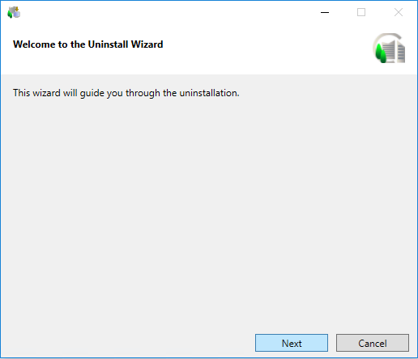
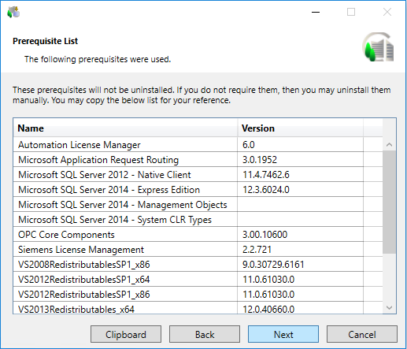
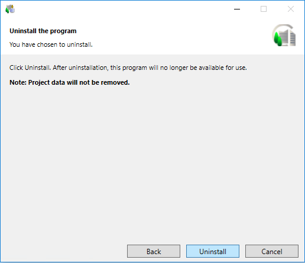
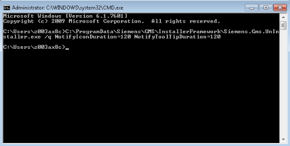

Uninstall the Management Station
You can uninstall a Desigo CC management station using the custom and silent modes.
Using Custom Installation Mode
- You have made a backup of the server project and HDB. For more information, see Project and HDB Backup Procedures.
- You have stopped the running project(s) on Server/Client/FEP installations and closed SMC. (See Stop a Project and Exit the System Management Console in Server Projects Configuration Procedures.)
- You have closed Desigo CC Client application.
- The Windows account used to uninstall Desigo CC has administrative access to the computer where you are performing uninstallation.
- Uninstall the management station using one of the following ways:
- From the Windows Start menu, select All Programs > [company name] > Desigo CC > Tools > Uninstall Desigo CC .
- From Windows Start menu, select Control Panel > Programs and Features > Desigo CC and click Uninstall at the top of the list.
- A User Account Control message can display if your UAC settings are set to Default or Always Notify, asking you if you want to allow this installation program to make changes to the computer.
- Click Yes.
Alternatively, you can get approval from IT to change the UAC settings. (See Changing User Account Control Settings). - The Welcome to the Uninstall Wizard dialog box displays.
NOTE: The language of the Uninstall Wizard is the language selected at the time of the first installation. 
- Click Next. The Prerequisite List dialog box displays a list of software used by Desigo CC .

- Click Next.
- The Uninstall the program dialog box displays.

- Click Uninstall to proceed.
- The Uninstall Wizard shows a progress bar during the uninstallation.
NOTE: A message can display, notifying you that you must wait for another program to complete the process before you can uninstall Desigo CC. - If confirmed, the Uninstall Wizard uninstalls Desigo CC and removes
- the shortcuts for the Desigo CC,
- SMC (from the desktop and Start menu) and
- the Update Desigo CC shortcut from the desktop.
It also removes all installed extensions. - After a successful uninstall an Uninstall Completion message displays.
Using Silent Installation Mode
- You have made a backup of the server project and HDB. For more information, see Project and HDB Backup Procedures
- You have stopped the running projects on Server/Client/FEP installations and closed SMC. (See Stop a Project and Exit the System Management Console in Server Projects Configuration Procedures.)
- You have closed the Desigo CC Client application.
- The Windows account used to uninstall Desigo CC has administrative access on the computer where you are performing uninstallation.
- Make sure that no other process such as, .msi installation of any other program, is in progress when you start the uninstallation. Otherwise, the silent uninstallation is aborted with a notification.
- Start the Command Prompt as an Administrator (select Windows Start menu > All Programs > Accessories and select the Command Prompt menu, right-click it and then select Run as administrator).
- A User Account Control message can display if your UAC settings are set to Default or Always Notify, asking you if you want to allow this installation program to make changes to the computer.
- Click Yes.
Alternatively, you can get approval from IT to change the UAC settings. (See Changing User Account Control Settings). - Run the following command in the Command Prompt:
<Full path of the file Gms.UnInstallerSetup.exe> /q <NotifyIconDuration = Time in seconds> <NotifyToolTipDuration = Time in seconds>
where the optional parameter,NotifyIconDurationis the time duration in seconds (default 3 seconds) after which the Desigo CC icon disappears from the taskbar Notification area, unless you click Exit that displays when you right-click the taskbar icon to explicitly close the taskbar icon.NotifyToolTipDurationis the time duration in seconds (default 2 seconds) after which the silent uninstallation notification balloon tooltip closes, unless you click in the notification balloon tooltip upper right corner.
NOTE: Provide correct parameters for the silent uninstallation command in the Command Prompt. Otherwise, the silent uninstallation does not start and an error displays in the notification balloon tooltip. You then need to re-execute the command. - The Desigo CC icon displays in the taskbar notification area with the notification
Uninstallation started.
As the uninstallation proceeds, the taskbar icon displays the status.
Once started, you cannot cancel the silent uninstallation.
For any inconsistencies, failure or error during the silent installation a notification balloon tooltip displays for the Desigo CC icon.
Also you can refer to the Uninstaller Log file with the extension _SILENT located at the path
[System drive]:\ProgramData\[company name]\GMS\InstallerFramework\GMS_UnInstaller_Log.
If the uninstallation fails, before restarting the silent uninstallation, or switch to starting a custom uninstallation you must ensure that the current one is timed out.
Otherwise, click Exit in the context menu that displays when you right-click the Desigo CC taskbar icon. - After the silent uninstallation is complete, right-click the taskbar Desigo CC icon to display the following context menu options:
Exit: Click this menu to exit the taskbar.
View Log: Click this menu to open the Uninstaller Log file.
- On successful uninstallation,
Uninstallation completed successfullydisplays. and the logon dialog displays.
The icon stays in the notification area for the specified NotifyIconDuration (default 3 sec) unless you click Exit and close the taskbar icon. Even after the installation completes, you can refer to the Uninstaller Log file with the extension _SILENT located at the path
[System drive]:\ProgramData\[company name]\GMS\InstallerFramework\GMS_UnInstaller_Log.
The silent uninstaller returns exit codes when the silent uninstallation is complete. For more information, see Silent Uninstaller Exit Codes.